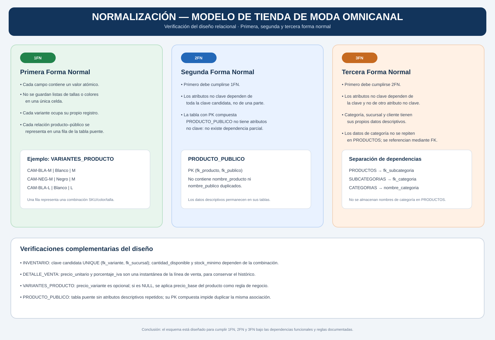

Final project · IFCD47 · CIFO La Violeta
Omnichannel Fashion Retail Database
Diseño e Implementación de una Base de Datos para la Gestión Omnicanal de Productos, Inventario y Ventas de una Tienda de Moda.
Independent educational project inspired by UNIQLO's omnichannel retail model. Not an official UNIQLO database or representation of its internal systems.
Current deliverables
Conceptual and logical design for the approved 15-table relational model. SQL implementation and advanced database objects are planned for later course stages.


Normalization · 1FN, 2FN, 3FN


Project status
Approved: business scope, E/R model, 15-table relational model and normalization analysis draft.
Next: validate all functional dependencies and constraints, then implement and test the schema in MySQL.